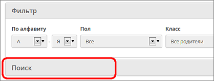

На этой странице представлен список родителей, внесенных в систему. Для этого выберите параметры фильтров "По алфавиту" и/или "Пол", и/или "Класс" (в котором учится ребёнок) и нажмите кнопку Применить.
В таблице выводятся Ф.И.О. родителя, пол, домашний телефон и рабочий телефон. Для получения более детальной информации о родителе нажмите на него левой кнопкой мыши, и вы окажетесь на странице Сведения о родителе. Для этого у вас должно быть, как минимум, право доступа Просматривать краткие сведения об учениках и родителях.
Быстрый поиск родителей
Чтобы быстро найти нужного родителя, щёлкните по секции "Поиск":

Введите в поле Фамилия первые буквы его фамилии и нажмите кнопку Поиск.
Результаты поиска выводятся независимо от выбранных параметров в секции Фильтр.
Кнопка Добавить позволяет ввести новые записи родителей с помощью формы для ввода.
Для удаления родителей необходимо иметь право доступа Удалять пользователей из системы.
Кнопка "Сформировать новые пароли"
Администратор системы может провести индивидуальную или массовую смену паролей, с присвоением случайных паролей, которые он затем может раздать родителям. (Эта функция работает полностью аналогично сотрудникам или учащимся.)
| 1. | Выведите на экран список родителей (с помощью кнопки Применить).
|
| 2. | Нажмите кнопку Сформировать новые пароли, и вы увидите справа в таблице графу "Новый пароль", с возможностью отметить родителей, которым система должна сгенерировать новые пароли.
|
| 3. | Отметьте родителей и нажмите кнопку Продолжить. Обратите внимание! Выбранным родителям будет сброшен их текущий пароль.
|
| 4. | Система присвоит выбранным родителям новые пароли, которые будут случайной последовательностью латинских букв, цифр и знаков препинания.
|
| 5. | На экран будет выведена таблица родителей, которым сформированы новые пароли, с удобной возможностью распечатать этот список. Обратите внимание! Кроме этой таблицы, новые пароли нигде не отображаются, их необходимо сразу распечатать либо скопировать с экрана.
|
| 6. | При первом входе в систему родителя с новым паролем, система предложит ему сменить пароль на свой собственный.
|
Время входа родителей в систему
Кнопки На печать и Экспорт в Excel на экране "Родители" (аналогично экранам "Сотрудники", "Ученики") - позволяют не просто отправить таблицу с экрана на печать или в Excel. А по сути, это полезные отчёты о родителях:
| · | кнопка На печать выводит отчёт о входе родителей в систему: в частности, выводятся логин, домашний и рабочий телефоны, время последнего входа в систему;
|
| · | кнопка Экспорт в Excel выводит таблицу сведений о родителях:
|
| - полностью все поля личных карточек - при наличии права доступа Редактировать все сведения об учениках и родителях,
|
| - или только краткие сведения - при наличии права доступа Просматривать краткие сведения об учениках и родителях.
|
Причём кнопки На печать и Экспорт в Excel выводят только записи, удовлетворяющие параметрам в секции Фильтр.
Сортировка списка родителей на экране
В таблице родителей показываются пользовательские имена на экране. Однако, сортировка списка происходит по фамилии, а не имени на экране.